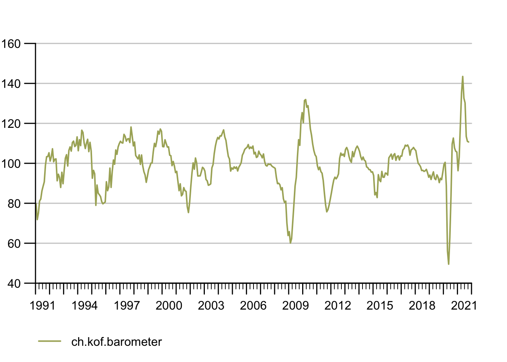

6 Case Studies
While the rest of the book provided more of a big picture type of insight, this section is all about application minded examples that feature code to reproduce.
6.1 Consuming APIs
An Application Programming Interface (API) is nothing else but an interface to facilitate machine to machine communication. An interface can be anything, any protocol or pre-defined process. But of course there are standard and not-so-standard ways to communicate. Plus some matter-of-taste type of decisions. But security and standard compliance are none of the latter. There are standards such as the popular, URL based REST that make developers’ lives a lot easier – regardless of the language they prefer.
Many services such as Google Cloud, AWS, your university library, your favorite social media platform or your local metro operator provide an API. Often either the platform itself or the community provide what’s called an API wrapper:
A simple program wraps the process of using the interface though dynamic URLs into a parameterized function. Because the hard work is done serverside by the API backend, building API wrappers is fairly easy and if you’re lucky wrappers for your favorite languages exit already. If that is the case end users can simply use functions like get_dataset(dataset_id) to download data programatically.
6.1.1 Example 1: The {kofdata} R package
The KOF Swiss Economic Institute at ETH Zurich provides such a wrapper in an R package. The underlying API allows to access the KOF time series archive database and obtain data and meta information alike. The below code snippet gets data from the API and uses another KOF built library ({tstools}) to visualize the returned time series.
library(kofdata)
# just for viz
library(tstools)
tsl <- get_time_series("ch.kof.barometer")
tsplot(tsl)
6.1.2 Example 2: The {OECD} R package
Also large organizations like the Organization for Economic Co-operation and development (OECD) provide API wrappers to facilitate data consumption.
6.1.3 Build Your Own API Wrapper
Here’s an example of a very simple API wrapper that makes use of the Metropolitan Museum of Modern Art’s API to obtain identifiers of pictures based on a simple search.
# Visit this example query
# https://collectionapi.metmuseum.org/public/collection/v1/search?q=umbrella
# returns a json containing quite a few ids of pictures that were tagged 'umbrella'
#' Search MET
#'
#' This function searches the MET's archive for keywords and
#' returns object ids of search hits. It is a simple wrapper
#' around the MET's Application Programming interface (API).
#' The function is designed to work with other API wrappers
#' and use object ids as an input.
#' @param character search term
#' @return list containing the totoal number of objects found
#' and a vector of object ids.
#'
# Note these declaration are not relevant when code is not
# part of a package, hence you need to call library(jsonlite)
# in order to make this function work if you are not building
# a package.
#' @examples
#' search_met("umbrella")
#' @importFrom jsonlite formJSON
#' @export
search_met <- function(keyword){
# note how URLencode improves this function
# because spaces are common in searches
# but are not allowed in URLs
url <- sprintf("https://collectionapi.metmuseum.org/public/collection/v1/search?q=%s", URLencode(keyword))
fromJSON(url)
}You can use these ids with another endpoint in order to receive the pictures themselves.
download_met_images_by_id <- function(ids,
download = "primaryImage") {
# Obtain meta description objects from MET API
obj_list <- lapply(ids, function(x) {
req <- download.file(sprintf("https://collectionapi.metmuseum.org/public/collection/v1/objects/%d",
x),destfile = "temp.json")
fromJSON("temp.json")
})
# Extract the list elements that contains
# img URLs in order to pass it to the download function
img_urls <- lapply(obj_list, "[[", download)
# Note the implicit return, no return statement needed
# last un-assigned statement is returned from the function
lapply(seq_along(img_urls), function(x) {
download.file(img_urls[[x]],
destfile = sprintf("data/image_%d.jpg", x)
)
})
}
# Step 4: Use the Wrapper
umbrella_ids <- search_met("umbrella")
umbrella_ids
download_met_images_by_id(umbrella_ids$objectIDs[2:4])6.2 Create Your Own API
Being able to expose data is a go-to skill in order to make research reproducible and credible. Especially when data get complex and require thorough description in order to remain reproducible for others, a programmtic, machine readable approach is the way to go.
6.2.1 GitHub to Serve Static Files
Exposing your data through an API is not something you would need a software engineer or an own server infrastructure for. Simply hosting a bunch of .csv spreadsheet alongside a good description (in separate files!!) on, e.g., GitHub for free can be an easy highly available solution to serve static files.
The KOF High Frequency Economic Monitoring dashboard simply shares standardized .csv (data) and .json (description) files based on a Github.
INSERT SCREENSHOT OF GITHUB HERE
To make it look at little niftier, the dashboard uses a quasar frontend to guide the human user, but it would not be necessary to have such a framework.
INSERT SCREENSHOT OF KOFDATA HERE
6.2.2 Simple Dynamic APIs
Even going past serving static files, does not require much software development expertise. Thanks to frameworks such as express.js or the {plumbr} it easy to create an API that turns a URL into a server side action and returns a result.
Assume you’ve installed node.js already, you can set up a simple API on your local computer just like this.
# run initialization in a dedicated folder
mkdir api
cd api
npm initjust sleep walk through the interactive dialog accepting all defaults. Once done, add install express using the npm package manager.
npm install express --save6.3 A Minimal Webscraper: Extracting Publication Dates
Even though KOF Swiss Economic Institute offers a REST API to consume publicly available data, publication dates are unfortunately not available through in API just yet. Hence, in order to automate data consumption based on varying publication dates, we need to extract upcoming publication dates of the Barometer from KOF’s media release calendar. Fortunately all future releases are presented online an easy-to-scrape table. So here’s the plan:
Use Google Chrome’s inspect element developer feature to find the X-Path (location in the Document Object Model) of the table.
Read the web page into R using
rvest.Copy the X-Path string to R to turn the table into a data.frame
use a regular expression to filter the description for what we need.
Let’s take a look at our starting point, the media releases sub page, first.

The website looks fairly simple and the jackpot is not hard, presented in a table right in front of us. Can’t you smell the data.frame already?
Right click the table to see a Chrome context window pop up. Select inspect.

Hover over the blue line in the source code at the bottom. Make sure the selected line marks the table. Right click again, select copy -> copy X-Path.

On to R!
library(rvest)
# URL of the media release subsite
url <- "https://kof.ethz.ch/news-und-veranstaltungen/medien/medienagenda.html"
# Extract the DOM object from the path we've previously detected using
# Chrome's inspect feature
table_list <- url %>%
read_html() %>%
html_nodes(xpath = '//*[@id="contentMain"]/div[2]/div/div[3]/div/div/div/div/div/div/table') %>%
# turn the HTML table into an R data.frame
html_table()
# because the above result may potentially contain multiple tables, we just use
# the first table. We know from visual inspection of the site that this is the
# right table.
agenda_table <- table_list[[1]]
# extract KOF barometer lines
pub_date <- agenda_table[grep("barometer",agenda_table$X3),]
pub_date## X1 X2 X3 X4 X5
## 5 30. Sep. 9:00 KOF Konjunkturbarometer Kalendereintrag
## 12 29. Okt. 9:00 KOF Konjunkturbarometer Kalendereintrag
## 18 30. Nov. 9:00 KOF Konjunkturbarometer Kalendereintrag
## 24 30. Dez. 9:00 KOF Konjunkturbarometer KalendereintragYay! We got everything we wanted. Ready to process.
6.4 Automate Script Execution: A GitHub Actions Example
6.5 Articles, Presentations, Reports and Websites /w Markdown and RMarkdown
Working with data asks for reproducible reports, presentations and articles that can be rendered to accessible, screenreader friendly online output as well as more traditional, print minded PDF output. This case study explains how to create documents like this book, a presentation for a conference or simple, static reporting minded websites.
Markdown is simple language based approach that can handle all of these tasks and allows for automation at the same time. Automation of document rendering does not only save time, it also ensures reproducibility across different machines. The name Markdown is a wordplay as Markdown is a simple mark-up language, similar to HTML or LaTeX but with a much much simpler syntax. Markdown helps users to format plain text using reserved characters. For example, a set of ** at the beginning and at the end of a word, sentence or paragraph lets everything wrapped in between these double asterisk appear bold, wrapping text in a single * asterisk makes the wrapped text italic. Markdown has become so ubiquitous that websites such as GitHub, discussion boards or Q&A sites allow users who post online to use Markdown to format their text.
Various rendering engines can render Markdown into HTML, PDF or even MS Word output. Often pandoc is a popular driver as a universal document converter under the hood. Programming languages such as Python and R have embraced Markdown based reporting to mingle descriptive plain text with code in order to execute the code at render time and fit tables, figures and even animations into reports. Jupyter notebooks is an interactive Python based example. In the R ecosystem the approach is slightly different and is called knitting which is why the corresponding package is called knitr. In the meantinem there is a plethora of packages (with great documentation that I won’t c&p here but refer to) for different flavors of output: {bookdown} for online books such as this one, {pkgdown} for documenting your own R package or {blogdown} to run your own markdown based blog (hosted for free on, e.g., GitHub). In addition to these “main diagonal” packages, there smaller gems such as the {postcard} package to get a mini personal website up in a few minutes.
- Markdown source of this particular site that you are reading here.
- Markdown source of a presentation slides
INSERT SKETCH HERE
6.6 Web Application /w the Shiny Framework
Fancy dashboards and the promise of an easy to use way to create dynamic web applications have made the {shiny} R package one of the most frequent items on data people’s bucket list of things to learn. In the meantime {shiny} has gathered an entire ecosystem of helper packages, e.g., to boilerplate applications or to make use of other frontend frameworks through {shiny}. This case studies intends to de-mystify the package and to explain basic concepts, but no rewrite its great documentation or blogs and books around {shiny}.
The code for a {shiny} app can live in a single file, but for the sake of illustrating the concept I will use two files here: a frontend file called ui.R and a backend file called server.R. If we follow this convention and put both files into one folder a the shiny runtime
6.6.1 Frontend: ui.R
INSERT JOHNNY BRAVO HERE. MAYBE I AM LATE BUT I LOOK GOOD.
In a separation-of-concerns approach, the part of the application which makes sure fonts, figures and tables are neatly presented in our web browsers is called the frontend. The markup-language HTML has been taking care of this for decades and therefore has been associated with web programming even though it is not a programming language, but rather a language that helps to format and position things – very much like LaTeX. To make it easier to implement entire styles, e.g., corporate design, CSS has been around as HTML’s partner for several decades. The trio is completed by the Javascript programming language which went from messy scripting language to being used everywhere. In web frontends it’s mainly used to make things dynamic by modifying the so-called DOM, i.e., the tree like structure of HTML while the page is already rendered and being displayed in our browsers.
So what has the {shiny} R package to do with all of this? {shiny} makes sure you do not have to care about the above if you do not want to. Abstracting HTML/CSS/JS way from the developer leads varying opinions about {shiny} which maybe very confusing for the novice. The R world mostly loves while application developers don’t get the hype (if they know the {shiny} framework at all).
However, {shiny} is a great opportunity to create beautiful state-of-the-art web applications w/o learning a set of new languages if you come out of of the data corner. As part of this process {shiny} helps developers organize their code into backend and frontend code, something not necessarily common for people for rather program with data as opposed to application developers. A graphical user interfaces (GUI) let alone user experience (UX) is a beast of its own.
A frontend ui.R file could look like this
library(shiny)6.6.2 Backend: server.R
The server.R files does all the heavy lifting. Computation, file processing, data access it all happens inside the server function. Sometimes you want to change the user interfaces depending on the result of some computation. In this special case the user interface
6.6.3 Quickstart: A Minimal Demo App
If want to you catch a glimpse of {shiny} running on your own computer asap, simply install the {shiny} R package and run the following single file application.
library(shiny)
ui <- fluidPage(
mainPanel(
plotOutput("rndtest"),
sliderInput("rnd_n","Number of Observations",1,1000,100)
)
)
server <- function(input, output, session) {
output$rndtest <- renderPlot({
hist(rnorm(input$rnd_n))
})
}
shinyApp(ui, server)Running the code will fire up a shiny server and a separate session on tha server to run your app on your local computer. Your development server is up an running and will react to many changes on the fly w/o having to restart the server for the changes to come into effect.
6.6.4 Hosting: Make Apps Available Online
Though some shiny apps just live happily inside R packages many of them are designed to be shown to a larger public as standalone apps. Examples include for an interactive data visualization or forms to gather input data. There are many reasons to make {shiny} apps available online. In order to do so, you can either host them yourself within your university or company infrastructure or using your favorite cloud provider. The inventors of shiny, the R Studio company also offers hassle free software-as-a-service (SaaS) shiny hosting on shinyapps.io. For a more detailed discussion of on-premise (in house hosting) or service based hosting please take a look at the infrastructure section of this book.
6.7 Spatial Visualization with Leaflet and Open Streetmap
6.8 Basic Parallel Programming
Here’s an R example using the {microbenchmark} package to check the effect parallel computing on running seasonal adjustment of multiple time series. First let’s set up some demo data: We simply create a list with 1000 elements each of which is the same monthly time series about airline passengers from 1949-1960.
data("AirPassengers")
tsl <- list()
for(i in 1:1000){
tsl[[i]] <- AirPassengers
}Now, let’s load the {seasonal} package and perform a basic seasonal adjustment of each of these time series. The first statement performs 1000 adjustments sequentially, the second statement uses parallel computing to spread computations across my machines multiple processors. The key take away from this exercise is not the parallel computation itself, but the ability to set up a benchmark.
library(seasonal)
library(microbenchmark)Obviously the absolute computation time depends on the hardware used, but also the operating system can be an important factor depending on the task at hand. Even though the combination of algorithm, hardware, operating system and software used for the computation can make assessment a daunting, complex task, easily venturing into expert realm, a basic understanding and a ballpark relation between multiple approaches can carry you a long way.